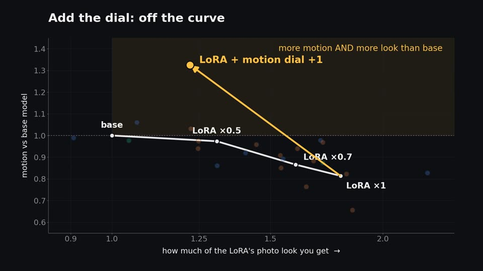
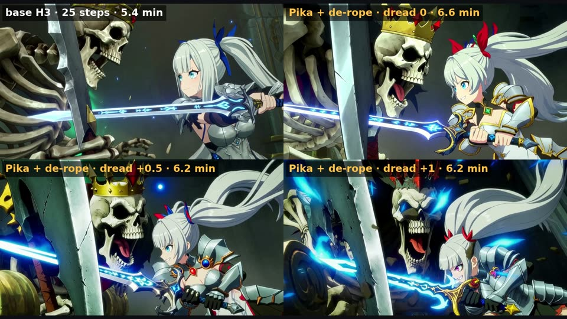
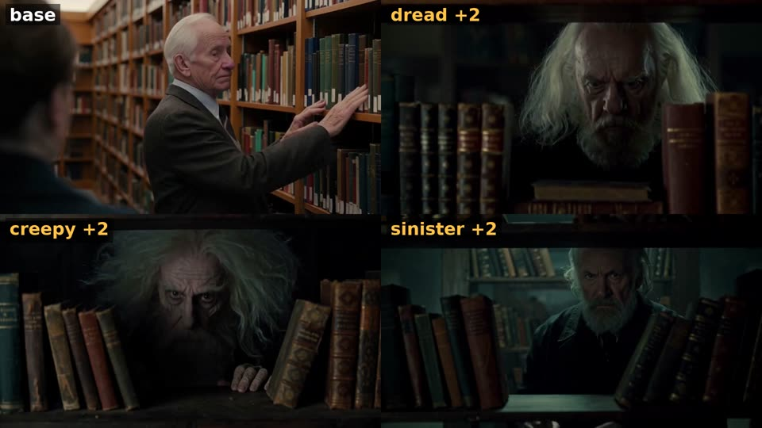
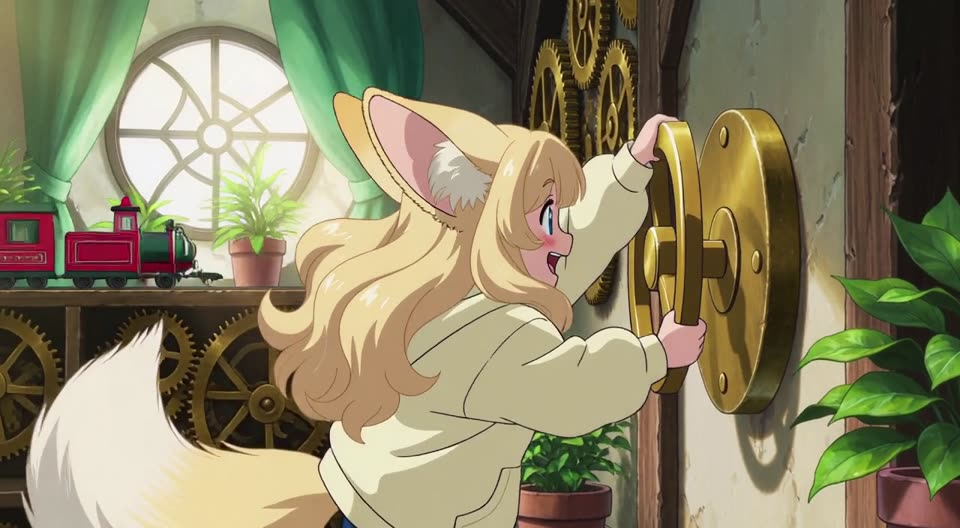

Dials
Training-free steering for MiniMax H3, made from prompt pairs.
Write two prompts that differ in one quality, such as "stands perfectly still" and "runs across the scene". Dials turns the difference into a ~14 KB file that works like a strength slider in ComfyUI. Negative strength moves every generation toward the first prompt, positive toward the second.
Demo, 1:57. Every video shot was rendered locally with MiniMax H3 and Pika H3 Flex in ComfyUI, and the narration was voiced by MiniMax H3 too. Captions are burned in.
What a dial is
How it started
DaveSnow's Natural_detailV2 dataset is 122 beautiful, perfectly still photos. An H3 LoRA trained on stills costs about 20 % of subject motion. His trick of training only every other block behaved like turning the LoRA down to about 0.7: the same trade at a smaller dose.
Every post-hoc edit we tried (block subsets, factor splits, activation projections, timestep schedules) landed back on that same strength curve. Untangling the weights would take far more time, so the question became: is there anything less tangled to play with? The prompt is. In prompt space, an idea like motion is one direction.

Measured
| motion dial on base H3 | motion vs base |
|---|---|
| −2 | 0.05× (near-frozen, cinemagraph-like) |
| +2 | about 2.7× (everything zooms) |
| with DaveSnow's detail LoRA (12 clips, vs base) | subject motion | detail |
|---|---|---|
| LoRA alone | 0.81× | 1.80× |
| LoRA + motion dial +1 | 1.33× | 1.22× |
At +1 you get more motion and more of the LoRA's look than the base model. +0.5 to +1 is the sane range for everyday use; above about 1.5, side effects appear.
Pika H3 Flex, with de-rope
The dials work unchanged on Pika H3 Flex, a 6-step LoRA for H3. De-rope finds stretches that move too fast for the frame rate, slows them, re-renders and maps the clip back to real time.

| 1280×704, 141 frames, seed 42, one RTX PRO 6000 Max-Q | time | motion (px/frame) | sharpness |
|---|---|---|---|
| MiniMax H3 base, 25 steps, no de-rope | 326 s | 2.25 | 348 |
| Pika + de-rope, motion +0.5, dread 0 | 393 s | 2.44 | 477 |
| Pika + de-rope, motion +0.5, dread +0.5 | 370 s | 2.56 | 473 |
| Pika + de-rope, motion +0.5, dread +1 | 369 s | 2.58 | 445 |
Motion: camera-removed optical flow. Sharpness: variance of the Laplacian (higher is crisper). One take each. Individual clips: Hugging Face examples.
Villainy pack
Eight evil flavours, each its own direction: sinister, creepy, cold, unhinged, seductive, corrupted, dread and impish. +1 to +2 is the sweet spot.

- Sinister tends to crush speech audio (dials steer H3's sound too). Keep it low for clear dialogue.
- Unhinged really is unhinged: it leans aggressive even at +2.
Get started
- Install the nodes (no extra dependencies):
cd ComfyUI/custom_nodes git clone https://github.com/matlowai/ComfyUI-Dials
- Copy the dial files (
dials/*.safetensors, from the repo or Hugging Face) intoComfyUI/models/loras/dials/. - Load a workflow:
dials_studio_h3.json(motion + evil sliders),dial_maker_h3.json(make your own), ordials_pika_h3_flex*.json(Pika, with and without de-rope).
Needs MiniMax H3 in ComfyUI (Comfy-Org repack). The de-rope workflows also need ComfyUI-MAINodes.
